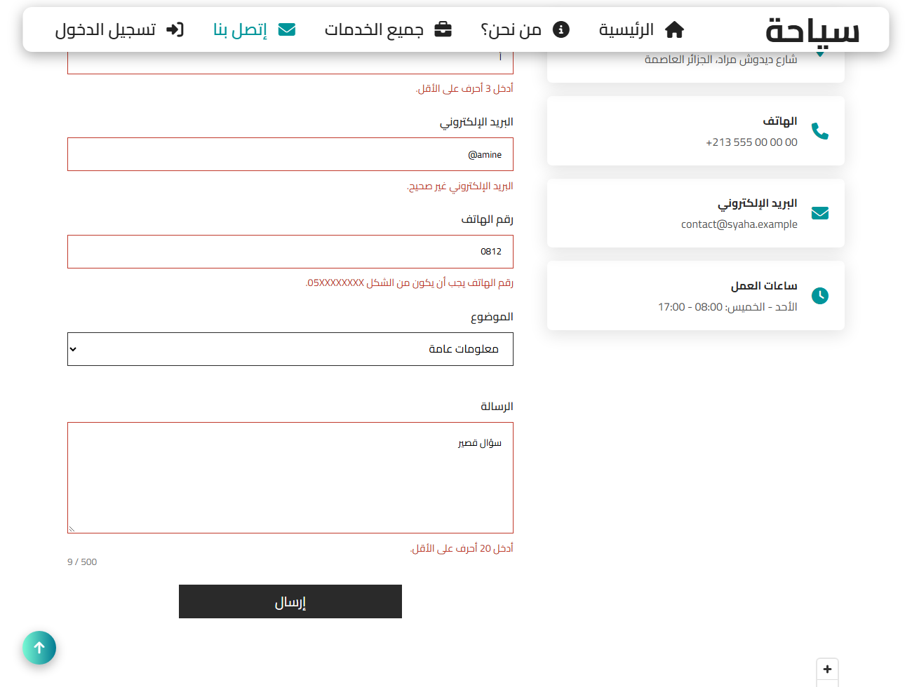
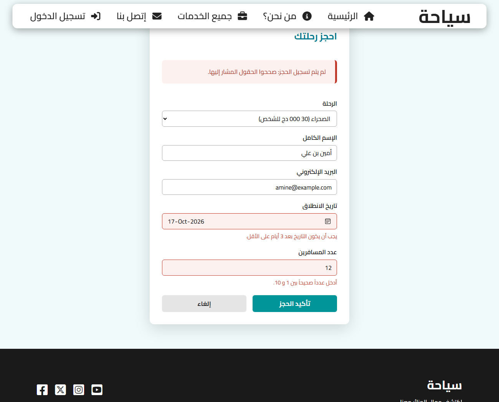
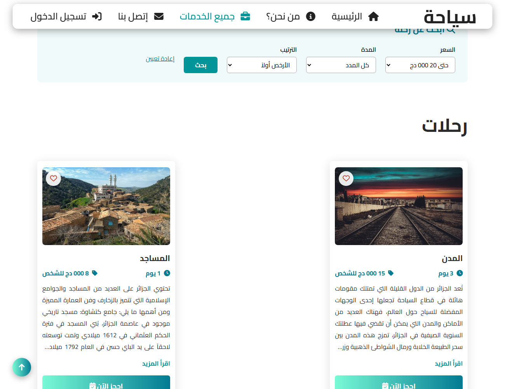
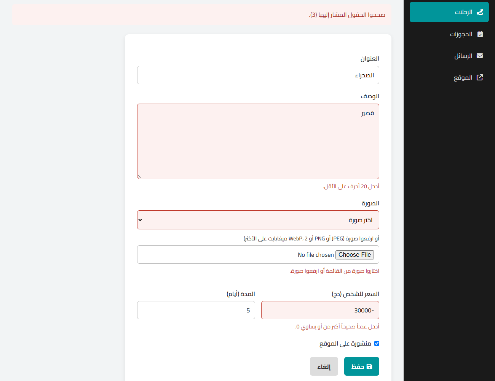

Lab 6: PHP forms and server-side validation
Instructions
In Lab 5 the forms of Syaha started to send their data to PHP, with a few quick checks. In this lab you make the server the real guardian of the data: a reusable validation module, an error under each field, forms that keep what the visitor typed, a booking page that works even without JavaScript, a search form with GET, and a secure upload of the photos of the trips. Then you validate every form of your team project on the server.
I. What this lab adds to the back end
| File | Change |
|---|---|
includes/validation.php | new: validate() and its rules |
includes/upload.php | new: secure storage of uploaded photos |
includes/functions.php | input(), field_error(), invalid_attributes(); image_url() knows the uploaded photos |
contact_us.php | validation with validate(), an error under each field |
book.php | now also a page: the booking form, shown again with its errors |
services.php, includes/queries.php | search form (GET) and search_trips() |
admin/trip_form.php, admin/trip_delete.php | photo upload, errors under the fields, deletion of unused photos |
uploads/trips/ | new: the uploaded photos, with a protective .htaccess |
Open it at http://localhost/<project folder>/SRC/Labs/Lab_6/index.php (Apache and MySQL started, syaha database imported as in Lab 5).
Why validate on the server?
The checks of Lab 4 run in the visitor's browser, so the visitor controls them: JavaScript can be switched off, required or maxlength can be deleted in the developer tools, and a request can be sent without any browser at all:
# send the contact form without any browser: no HTML, no JavaScript, no "required"
curl -i -X POST http://localhost/<project folder>/SRC/Labs/Lab_6/contact_us.php \
-d "name=x" -d "email=not-an-email" -d "subject=hack" -d "message=hi"
# the answer is "HTTP/1.1 422 Unprocessable Entity" with an error under each field
Browser validation is for the comfort of honest visitors; server validation is what protects the data. The two use the same rules: the server checks everything again, whatever the browser did.
II. Step 1: receive the data of a form
The name of each field becomes a key of $_POST or $_GET, depending on the method of the form:
<form action="contact_us.php" method="post">
<input type="text" name="name"> <!-- read with $_POST['name'] -->
<select name="subject">...</select> <!-- read with $_POST['subject'] -->
</form>
<form action="services.php" method="get"> <!-- services.php?max_price=20000&sort=price_asc -->
<select name="max_price">...</select> <!-- read with $_GET['max_price'] -->
</form>
| GET | POST | |
|---|---|---|
| Where are the values? | in the URL: ?max_price=20000 | in the body of the request |
| Visible, bookmarkable, shareable | yes | no |
| Size | limited (a few KB) | large (files) |
| Use it for | reading: search, filters, sorting, pages | changing data: create, update, delete, send |
| In Syaha | the search form of the services page | contact, booking, admin forms |
$_SERVER['REQUEST_METHOD'] tells whether the page was requested normally ('GET') or by sending a form ('POST'). Read the values carefully:
$name = $_POST['name']; // Warning if the field was not sent at all
$name = $_POST['name'] ?? ''; // "" when missing: no warning
empty('0'); // true! "0" is "empty" for PHP: never use empty() for a quantity
isset($_POST['is_published']); // the right test for a checkbox: it is only sent when checked
trim(' أمين '); // "أمين": spaces typed by mistake are removed
strlen('أمين'); // 8 (bytes): use mb_strlen('أمين') = 4 (characters)
Syaha reads every text with one small function. A field can be sent as an array (name="email[]"): trim() would then fail with an error, so arrays are refused:
includes/functions.php (extract)
/**
* A text sent by a form ($_POST or $_GET), trimmed.
* A field can be sent as an array (name="email[]"): it is refused, otherwise trim() would fail.
*/
function input(string $name, string $method = 'post'): string
{
$value = ($method === 'get' ? $_GET : $_POST)[$name] ?? '';
return is_string($value) ? trim($value) : '';
}
III. Step 2: a reusable validation module
Writing if after if for every field of every form is long and easy to get wrong. Syaha describes the rules of a form in an array and checks them with one function:
includes/validation.php
<?php
// Server-side validation of the forms (Lab 6).
//
// $errors = validate($values, [
// 'name' => ['required', 'min:3', 'max:100'],
// 'email' => ['required', 'email'],
// 'phone' => ['phone'], // optional: only checked when it is not empty
// ]);
//
// $errors is ['field' => 'message', ...]: empty when everything is valid.
// Each field gets one message: the one of the first rule that fails.
function validate(array $values, array $rules): array
{
$errors = [];
foreach ($rules as $field => $field_rules) {
$value = $values[$field] ?? '';
foreach ($field_rules as $rule) {
// 'int:1,10' -> name 'int', parameter '1,10'
[$name, $parameter] = array_pad(explode(':', $rule, 2), 2, '');
$error = check_rule($name, $parameter, (string) $value);
if ($error !== null) {
$errors[$field] = $error;
break;
}
}
}
return $errors;
}
/** Returns the error message of one rule, or null when the value respects it. */
function check_rule(string $name, string $parameter, string $value): ?string
{
// an empty value is only refused by "required": the other rules apply to what was typed
if ($value === '' && $name !== 'required') {
return null;
}
return match ($name) {
'required' => $value === '' ? 'هذا الحقل إجباري.' : null,
'min' => mb_strlen($value) < (int) $parameter ? "أدخل {$parameter} أحرف على الأقل." : null,
'max' => mb_strlen($value) > (int) $parameter ? "{$parameter} حرف على الأكثر." : null,
'email' => filter_var($value, FILTER_VALIDATE_EMAIL) === false ? 'البريد الإلكتروني غير صحيح.' : null,
'phone' => preg_match('/^0[5-7][0-9]{8}$/', $value) === 1 ? null : 'رقم الهاتف يجب أن يكون من الشكل 05XXXXXXXX.',
'int' => check_int($value, $parameter),
'in' => in_array($value, explode(',', $parameter), true) ? null : 'الرجاء اختيار قيمة من القائمة.',
'date' => check_date($value, (int) $parameter),
default => throw new InvalidArgumentException("Unknown validation rule: $name"),
};
}
/** 'int:1,10': a whole number between 1 and 10 ('int:0,' has no maximum). */
function check_int(string $value, string $range): ?string
{
[$min, $max] = array_pad(explode(',', $range), 2, '');
$options = [];
if ($min !== '') {
$options['min_range'] = (int) $min;
}
if ($max !== '') {
$options['max_range'] = (int) $max;
}
if (filter_var($value, FILTER_VALIDATE_INT, ['options' => $options]) !== false) {
return null;
}
return $max === '' ? "أدخل عدداً صحيحاً أكبر من أو يساوي {$min}." : "أدخل عدداً صحيحاً بين {$min} و {$max}.";
}
/** 'date:3': a real date in the format YYYY-MM-DD, at least 3 days from today. */
function check_date(string $value, int $min_days): ?string
{
$date = DateTime::createFromFormat('!Y-m-d', $value);
// createFromFormat accepts "2025-02-31" (it becomes March 3rd): compare with the original text
if ($date === false || $date->format('Y-m-d') !== $value) {
return 'التاريخ غير صحيح.';
}
if ($date < new DateTime("today +{$min_days} days")) {
return "يجب أن يكون التاريخ بعد {$min_days} أيام على الأقل.";
}
return null;
}
- Each field gets one message: the one of the first rule that fails (
break).['required', 'email']says "mandatory" for an empty field, "invalid" for a wrong one. - An empty optional field (no
required) is valid: the phone number is optional, but if it is typed it must be correct. match(PHP 8) chooses the check of each rule; an unknown rule throws an exception: a typo in a rule is a bug of the developer, it must not be silently ignored.filter_varchecks e-mails (FILTER_VALIDATE_EMAIL) and integers with a range (FILTER_VALIDATE_INTwithmin_range/max_range); it returnsfalsewhen the value is invalid.preg_matchtests a regular expression: the same Algerian phone pattern as in Lab 4.mb_strlencounts characters, not bytes:strlen('أمين')is 8.- Dates:
DateTime::createFromFormataccepts 31 February and moves it to March; comparing with the original text detects it. in:accepts only the values of a list: the value of a<select>can be changed in the developer tools as easily as a text field.
IV. Step 3: errors under each field and sticky forms

The contact page uses the module: its rules are the ones of the JavaScript of Lab 4, checked again.
contact_us.php
<?php
require __DIR__ . '/includes/functions.php';
require __DIR__ . '/includes/queries.php';
require __DIR__ . '/includes/validation.php';
$subjects = [
'info' => 'معلومات عامة',
'booking' => 'حجز رحلة',
'custom' => 'رحلة حسب الطلب',
'other' => 'أخرى',
];
// the rules of the form: the same as the JavaScript of Lab 4, checked again by the server
$rules = [
'name' => ['required', 'min:3', 'max:100'],
'email' => ['required', 'email', 'max:255'],
'phone' => ['phone'],
'subject' => ['required', 'in:' . implode(',', array_keys($subjects))],
'message' => ['required', 'min:20', 'max:500'],
];
// 1. initial values: empty fields
$values = array_fill_keys(array_keys($rules), '');
$errors = [];
// 2. the form was sent: read, validate, save, redirect (Post/Redirect/Get)
if ($_SERVER['REQUEST_METHOD'] === 'POST') {
foreach ($rules as $field => $field_rules) {
$values[$field] = input($field);
}
$errors = validate($values, $rules);
if (!$errors) {
create_message([
'full_name' => $values['name'],
'email' => $values['email'],
'phone' => $values['phone'],
'subject' => $values['subject'],
'message' => $values['message'],
]);
redirect('contact_us.php?sent=1#Contact');
}
// 422: the request was understood but its data is not valid
http_response_code(422);
}
// 3. display the page (with the errors and the values typed, if any)
$page_title = 'سياحة | إتصل بنا';
$active = 'contact';
$styles = ['Hero', 'Contact_Us'];
$responsive = ['Hero', 'Contact_Us'];
$scripts = ['Contact_Form'];
require __DIR__ . '/includes/header.php';
?>
<main>
<section id="Hero_ID">
<div class="Hero">
<img src="../../IMAGES/Oran.jpg" alt="وهران" />
</div>
<div class="Hero_Text">
<h1>مرحبا بكم في موقعنا</h1>
<p>نحن نقدم لكم أفضل الخدمات</p>
<a href="#Contact" class="Show" id="Contact_Us_Btn_ID">تواصل معنا</a>
</div>
</section>
<div class="Contact_Us_Container" id="Contact">
<h1>إتصل بنا</h1>
<?php if (isset($_GET['sent'])): ?>
<p class="Flash Flash_Success" role="status">شكراً لكم! تم استلام رسالتكم وسنرد عليكم في أقرب وقت.</p>
<?php endif; ?>
<?php if ($errors): ?>
<p class="Flash Flash_Error" role="alert">
لم يتم إرسال الرسالة: صححوا الحقول المشار إليها (<?= count($errors) ?>).
</p>
<?php endif; ?>
<div class="Contact_Layout">
<div class="Contact_Info">
<div class="Contact_Info_Item">
<i class="fa-solid fa-location-dot"></i>
<div>
<h4>العنوان</h4>
<p>شارع ديدوش مراد، الجزائر العاصمة</p>
</div>
</div>
<div class="Contact_Info_Item">
<i class="fa-solid fa-phone"></i>
<div>
<h4>الهاتف</h4>
<a href="tel:+213555000000"><span dir="ltr">+213 555 00 00 00</span></a>
</div>
</div>
<div class="Contact_Info_Item">
<i class="fa-solid fa-envelope"></i>
<div>
<h4>البريد الإلكتروني</h4>
<a href="mailto:contact@syaha.example">contact@syaha.example</a>
</div>
</div>
<div class="Contact_Info_Item">
<i class="fa-solid fa-clock"></i>
<div>
<h4>ساعات العمل</h4>
<p>الأحد - الخميس: 08:00 - 17:00</p>
</div>
</div>
</div>
<!-- sticky form: the values typed come back in the fields, each error is under its field -->
<form action="contact_us.php#Contact" method="post">
<label for="Name">الإسم الكامل</label>
<input type="text" id="Name" name="name" value="<?= e($values['name']) ?>" autocomplete="name"
required<?= invalid_attributes($errors, 'name', 'Name') ?> />
<?= field_error($errors, 'name', 'Name') ?>
<label for="Email">البريد الإلكتروني</label>
<input type="email" id="Email" name="email" value="<?= e($values['email']) ?>" autocomplete="email"
required<?= invalid_attributes($errors, 'email', 'Email') ?> />
<?= field_error($errors, 'email', 'Email') ?>
<label for="Phone">رقم الهاتف</label>
<input type="tel" id="Phone" name="phone" value="<?= e($values['phone']) ?>" autocomplete="tel"
placeholder="05XXXXXXXX" pattern="0[5-7][0-9]{8}"<?= invalid_attributes($errors, 'phone', 'Phone') ?> />
<?= field_error($errors, 'phone', 'Phone') ?>
<label for="Subject">الموضوع</label>
<select id="Subject" name="subject" required<?= invalid_attributes($errors, 'subject', 'Subject') ?>>
<option value="">اختر موضوعاً</option>
<?php foreach ($subjects as $key => $label): ?>
<option value="<?= $key ?>" <?= $key === $values['subject'] ? 'selected' : '' ?>><?= $label ?></option>
<?php endforeach; ?>
</select>
<?= field_error($errors, 'subject', 'Subject') ?>
<label for="Message">الرسالة</label>
<textarea id="Message" name="message" rows="5" maxlength="500"
required<?= invalid_attributes($errors, 'message', 'Message') ?>><?= e($values['message']) ?></textarea>
<?= field_error($errors, 'message', 'Message') ?>
<button type="submit">إرسال</button>
</form>
</div>
<iframe class="Contact_Map" title="موقع الوكالة على الخريطة" loading="lazy"
referrerpolicy="no-referrer-when-downgrade"
src="https://www.openstreetmap.org/export/embed.html?bbox=3.03%2C36.75%2C3.07%2C36.78&layer=mapnik&marker=36.765%2C3.05"></iframe>
</div>
</main>
<?php require __DIR__ . '/includes/footer.php'; ?>
- Initial values: empty fields, no errors (first display of the page).
- The form was sent: read the values, validate them. If everything is valid, save and redirect (Post/Redirect/Get: reloading the next page does not send the message again). Otherwise answer with the status
422(Unprocessable Entity): the request was understood but its data is invalid. - Display: the same HTML in both cases. The values typed are put back in the fields (sticky form: nobody wants to type a long message again because of a wrong e-mail), always through
e(), and each error is written under its field.
includes/functions.php (extract)
// ------------------------------------------------------------------ displaying the errors of a form
/** The message of a field, under the field (the class is the one used by the JavaScript of Lab 4). */
function field_error(array $errors, string $field, string $id): string
{
if (!isset($errors[$field])) {
return '';
}
return '<small class="Field_Error" id="' . $id . '_Error" aria-live="polite">' . e($errors[$field]) . '</small>';
}
/** Attributes of an invalid field: red border and link to its message for screen readers. */
function invalid_attributes(array $errors, string $field, string $id): string
{
return isset($errors[$field]) ? ' class="Invalid" aria-invalid="true" aria-describedby="' . $id . '_Error"' : '';
}
invalid_attributes() adds the class Invalid (red border) and aria-invalid/aria-describedby, which make screen readers announce the error with the field. The message uses the class Field_Error, the one of the JavaScript of Lab 4: the script now reuses the message written by the server instead of adding a second one.
Contact_Form.js (extract)
// a message element after each field; the server (Lab 6) may already have written one: reuse it
Rules.forEach(([Field]) => {
let Error = Field.nextElementSibling;
if (!Error || !Error.classList.contains("Field_Error")) {
Error = document.createElement("small");
Error.className = "Field_Error";
Field.after(Error);
}
Error.id = Field.id + "_Error";
Error.setAttribute("aria-live", "polite");
Field.setAttribute("aria-describedby", Error.id);
});
"><script>... in the name. Without e(), the sticky form would become an XSS hole.V. Step 4: a booking page that works without JavaScript
In Lab 5 the "احجز الآن" button was created by JavaScript: without JavaScript there was no way to book, and the errors of book.php were reduced to one generic message. Now the server writes a real link on each trip card:
includes/trips_section.php (extract)
<!-- a real link: it works without JavaScript; with JavaScript it opens the dialog (Booking.js) -->
<a href="book.php?trip=<?= (int) $trip['id'] ?>&return=<?= e($return) ?>" class="Book_Btn">
<i class="fa-solid fa-calendar-check"></i> احجز الآن
</a>
book.php becomes a page: GET book.php?trip=3 shows the form with the trip already chosen; the form (or the dialog) is sent to POST book.php, which saves and redirects, or shows the form again with an error under each field.

book.php
<?php
// The booking page.
// GET book.php?trip=3 shows the form (visitors without JavaScript, or a link shared)
// POST book.php the dialog or the form was sent: validate, then save and redirect,
// or show the form again with the errors under the fields
require __DIR__ . '/includes/functions.php';
require __DIR__ . '/includes/queries.php';
require __DIR__ . '/includes/validation.php';
$trips = get_trips();
$trip_ids = array_map(fn ($trip) => (string) $trip['id'], $trips);
$rules = [
'trip_id' => ['required', 'in:' . implode(',', $trip_ids)],
'name' => ['required', 'min:3', 'max:100'],
'email' => ['required', 'email', 'max:255'],
'date' => ['required', 'date:' . BOOKING_MIN_DAYS],
'people' => ['required', 'int:1,10'],
];
// only come back to one of our own pages
$return = input('return', $_SERVER['REQUEST_METHOD'] === 'POST' ? 'post' : 'get');
$return = in_array($return, ['index.php', 'services.php'], true) ? $return : 'index.php';
$values = array_fill_keys(array_keys($rules), '');
$values['trip_id'] = input('trip', 'get');
$values['people'] = '1';
$errors = [];
if ($_SERVER['REQUEST_METHOD'] === 'POST') {
foreach ($rules as $field => $field_rules) {
$values[$field] = input($field);
}
$errors = validate($values, $rules);
if (!$errors) {
$id = create_booking([
'trip_id' => (int) $values['trip_id'],
'full_name' => $values['name'],
'email' => $values['email'],
'departure_date' => $values['date'],
'people' => (int) $values['people'],
]);
if ($id !== null) {
redirect($return . '?booked=' . $id . '#Trips');
}
// the trip was unpublished between the display of the form and its sending
$errors['trip_id'] = 'هذه الرحلة لم تعد متاحة.';
}
http_response_code(422);
}
$earliest = (new DateTime('today +' . BOOKING_MIN_DAYS . ' days'))->format('Y-m-d');
$page_title = 'سياحة | احجز رحلتك';
$active = '';
$styles = [];
$responsive = [];
$scripts = [];
require __DIR__ . '/includes/header.php';
?>
<main class="Booking_Page">
<form class="Booking_Form" action="book.php" method="post">
<h2>احجز رحلتك</h2>
<?php if ($errors): ?>
<p class="Flash Flash_Error" role="alert">لم يتم تسجيل الحجز: صححوا الحقول المشار إليها.</p>
<?php endif; ?>
<input type="hidden" name="return" value="<?= e($return) ?>" />
<label for="Booking_Trip">الرحلة</label>
<select id="Booking_Trip" name="trip_id" required<?= invalid_attributes($errors, 'trip_id', 'Booking_Trip') ?>>
<option value="">اختر رحلة</option>
<?php foreach ($trips as $trip): ?>
<option value="<?= (int) $trip['id'] ?>" <?= (string) $trip['id'] === $values['trip_id'] ? 'selected' : '' ?>>
<?= e($trip['title']) ?> (<?= money((int) $trip['price']) ?> للشخص)
</option>
<?php endforeach; ?>
</select>
<?= field_error($errors, 'trip_id', 'Booking_Trip') ?>
<label for="Booking_Name">الإسم الكامل</label>
<input type="text" id="Booking_Name" name="name" value="<?= e($values['name']) ?>" autocomplete="name"
required<?= invalid_attributes($errors, 'name', 'Booking_Name') ?> />
<?= field_error($errors, 'name', 'Booking_Name') ?>
<label for="Booking_Email">البريد الإلكتروني</label>
<input type="email" id="Booking_Email" name="email" value="<?= e($values['email']) ?>" autocomplete="email"
required<?= invalid_attributes($errors, 'email', 'Booking_Email') ?> />
<?= field_error($errors, 'email', 'Booking_Email') ?>
<label for="Booking_Date">تاريخ الانطلاق</label>
<input type="date" id="Booking_Date" name="date" value="<?= e($values['date']) ?>" min="<?= $earliest ?>"
required<?= invalid_attributes($errors, 'date', 'Booking_Date') ?> />
<?= field_error($errors, 'date', 'Booking_Date') ?>
<label for="Booking_People">عدد المسافرين</label>
<input type="number" id="Booking_People" name="people" value="<?= e($values['people']) ?>" min="1" max="10"
required<?= invalid_attributes($errors, 'people', 'Booking_People') ?> />
<?= field_error($errors, 'people', 'Booking_People') ?>
<div class="Booking_Buttons">
<button type="submit" class="Booking_Confirm">تأكيد الحجز</button>
<a href="<?= e($return) ?>#Trips" class="Booking_Cancel">إلغاء</a>
</div>
</form>
</main>
<?php require __DIR__ . '/includes/footer.php'; ?>
With JavaScript, Booking.js keeps the dialog: it finds the link written by the server and opens the dialog instead of following it (preventDefault()). This is progressive enhancement: the page works with HTML and PHP alone, and JavaScript makes it nicer when it is available.
Booking.js (extract)
// a "book now" button at the bottom of each trip card.
// From Lab 6, the server writes a link to the booking page (it works without JavaScript):
// with JavaScript, the same link opens the dialog instead.
document.querySelectorAll(".Trip_Card").forEach((Card) => {
let Button = Card.querySelector(".Book_Btn");
if (!Button) {
Button = document.createElement("button");
Button.type = "button";
Button.className = "Book_Btn";
Button.innerHTML = '<i class="fa-solid fa-calendar-check"></i> احجز الآن';
Card.appendChild(Button);
}
Button.addEventListener("click", (event) => {
event.preventDefault();
Open(Card.querySelector("h4").textContent.trim());
});
});
in: comes from the database: a trip unpublished in the admin area can no longer be booked, even with an old form.VI. Step 5: a search form with GET

The services page gets a search form. It only reads data, so it uses method="get": the choices appear in the URL (services.php?max_price=20000&sort=price_asc) and a search can be bookmarked or shared.
services.php (extract)
// search form (GET): the choices are in the URL (services.php?max_price=20000&sort=price_asc#Trips),
// so a search can be bookmarked or shared. Each value is checked against the list of allowed choices.
$price_choices = ['' => 'كل الأسعار', '10000' => 'حتى 10 000 دج', '20000' => 'حتى 20 000 دج', '40000' => 'حتى 40 000 دج'];
$days_choices = ['' => 'كل المدد', '1' => 'يوم واحد', '3' => '3 أيام على الأكثر', '7' => 'أسبوع على الأكثر'];
$sort_choices = ['' => 'الترتيب الافتراضي', 'price_asc' => 'الأرخص أولاً', 'price_desc' => 'الأغلى أولاً', 'duration' => 'الأقصر أولاً'];
$search = [];
foreach (['max_price' => $price_choices, 'max_days' => $days_choices, 'sort' => $sort_choices] as $name => $choices) {
$value = input($name, 'get');
$search[$name] = array_key_exists($value, $choices) ? $value : ''; // an unknown value is ignored
}
$trips = search_trips(
$search['max_price'] === '' ? null : (int) $search['max_price'],
$search['max_days'] === '' ? null : (int) $search['max_days'],
$search['sort']
);
$booking_trips = get_trips(); // the dialog offers every trip, not only the ones found
services.php (extract)
<!--Search form starts here: GET, because it only reads data-->
<form class="Search_Form" action="services.php#Trips" method="get">
<h2><i class="fa-solid fa-magnifying-glass"></i> ابحث عن رحلة</h2>
<?php foreach (['max_price' => ['السعر', $price_choices], 'max_days' => ['المدة', $days_choices], 'sort' => ['الترتيب', $sort_choices]] as $name => [$label, $choices]): ?>
<label>
<?= $label ?>
<select name="<?= $name ?>">
<?php foreach ($choices as $value => $text): ?>
<option value="<?= e((string) $value) ?>" <?= (string) $value === $search[$name] ? 'selected' : '' ?>><?= $text ?></option>
<?php endforeach; ?>
</select>
</label>
<?php endforeach; ?>
<button type="submit">بحث</button>
<a href="services.php#Trips">إعادة تعيين</a>
</form>
includes/queries.php (extract)
/**
* Published trips filtered by the search form of the services page (Lab 6).
* $max_price and $max_days are null when the visitor did not choose them.
*/
function search_trips(?int $max_price, ?int $max_days, string $sort): array
{
// ORDER BY cannot use a placeholder: the column comes from this fixed list, never from the visitor
$orders = [
'price_asc' => 'price ASC',
'price_desc' => 'price DESC',
'duration' => 'duration_days ASC, price ASC',
];
$order = $orders[$sort] ?? 'id';
// the conditions are added only when needed; the values always go through placeholders
$where = ['is_published = 1'];
$parameters = [];
if ($max_price !== null) {
$where[] = 'price <= :max_price';
$parameters['max_price'] = $max_price;
}
if ($max_days !== null) {
$where[] = 'duration_days <= :max_days';
$parameters['max_days'] = $max_days;
}
$statement = db()->prepare('SELECT * FROM trips WHERE ' . implode(' AND ', $where) . ' ORDER BY ' . $order);
$statement->execute($parameters);
return $statement->fetchAll();
}
- Each value of the URL is compared with the list of the choices of its
<select>; an unknown value (?sort=DROP) is simply ignored. - The conditions are added to the SQL only when the visitor chose them, and their values go through placeholders as always.
ORDER BYcannot use a placeholder (it expects a column, not a value): the column is taken from a fixed array in the code, never from the URL.- The selected options are kept (
selected): a GET form is sticky too.
VII. Step 6: upload the photos of the trips
In the admin area, the photo of a trip can now be uploaded. A form that sends files needs method="post" and enctype="multipart/form-data"; PHP then describes each file in $_FILES:
$_FILES['image_file'] = [
'name' => 'my photo.jpg', // chosen by the visitor: never trust it
'type' => 'image/jpeg', // sent by the browser: never trust it either
'tmp_name' => 'C:\xampp\tmp\php1A2B.tmp', // where PHP stored the file temporarily
'error' => 0, // UPLOAD_ERR_OK, or one of the error codes below
'size' => 184320, // in bytes
];
| Error code | Meaning |
|---|---|
UPLOAD_ERR_OK (0) | the file was received |
UPLOAD_ERR_INI_SIZE (1) | larger than upload_max_filesize of php.ini |
UPLOAD_ERR_FORM_SIZE (2) | larger than the MAX_FILE_SIZE field of the form |
UPLOAD_ERR_PARTIAL (3) | only part of the file was received |
UPLOAD_ERR_NO_FILE (4) | no file was chosen |
includes/upload.php
<?php
// Secure upload of the photos of the trips (Lab 6).
const UPLOAD_FOLDER = 'uploads/trips/'; // relative to SRC/Labs/Lab_6
const UPLOAD_MAX_BYTES = 2 * 1024 * 1024; // 2 MB
const UPLOAD_TYPES = ['image/jpeg' => 'jpg', 'image/png' => 'png', 'image/webp' => 'webp'];
/**
* Checks and stores one uploaded image.
* Returns [path, error]: [null, null] when no file was chosen, [null, 'message'] when the file is refused,
* ['uploads/trips/xxx.jpg', null] when it was saved.
*/
function store_uploaded_image(?array $file): array
{
if ($file === null || $file['error'] === UPLOAD_ERR_NO_FILE) {
return [null, null];
}
// 1. did the upload itself work?
$error = match ($file['error']) {
UPLOAD_ERR_OK => null,
UPLOAD_ERR_INI_SIZE, UPLOAD_ERR_FORM_SIZE => 'الصورة كبيرة جداً (2 ميغابايت على الأكثر).',
UPLOAD_ERR_PARTIAL => 'لم يكتمل رفع الصورة، أعيدوا المحاولة.',
default => 'تعذر رفع الصورة.',
};
if ($error !== null) {
return [null, $error];
}
// 2. the size, checked by the server (MAX_FILE_SIZE in the form is only a hint for the browser)
if ($file['size'] > UPLOAD_MAX_BYTES) {
return [null, 'الصورة كبيرة جداً (2 ميغابايت على الأكثر).'];
}
// 3. the real type, read from the content of the file: the name and the type sent by the browser can lie
$type = (new finfo(FILEINFO_MIME_TYPE))->file($file['tmp_name']);
if (!isset(UPLOAD_TYPES[$type]) || getimagesize($file['tmp_name']) === false) {
return [null, 'يجب أن تكون الصورة من نوع JPEG أو PNG أو WebP.'];
}
// 4. a new random name: never keep the name chosen by the visitor (../../index.php, photo.php.jpg...)
$name = bin2hex(random_bytes(16)) . '.' . UPLOAD_TYPES[$type];
$path = UPLOAD_FOLDER . $name;
if (!move_uploaded_file($file['tmp_name'], __DIR__ . '/../' . $path)) {
return [null, 'تعذر حفظ الصورة.'];
}
return [$path, null];
}
/** Deletes an uploaded image (the photos of SRC/IMAGES are never deleted). */
function delete_uploaded_image(string $path): void
{
if (str_starts_with($path, UPLOAD_FOLDER) && basename($path) === substr($path, strlen(UPLOAD_FOLDER))) {
$file = __DIR__ . '/../' . $path;
if (is_file($file)) {
unlink($file);
}
}
}
shell.php and to open it, they run their code on your server. Every check matters:- the error code and the size are checked by the server (
MAX_FILE_SIZEin the form is only a hint for the browser); - the real type is read from the content of the file with
finfo, andgetimagesizeconfirms that it is an image; the name and the type sent by the browser can lie (photo.php.jpg); - the file gets a random name with the extension of its real type: the name of the visitor (
../../index.php) is never used; move_uploaded_fileonly moves files that really come from an upload;- the folder refuses to run scripts, as a last protection:
uploads/trips/.htaccess
# Folder of the uploaded photos: files here must never be run as code.
<FilesMatch "\.(php|phtml|phar|php\d|pl|py|cgi|sh)$">
Require all denied
</FilesMatch>
# PHP as an Apache module (XAMPP): switch PHP off in this folder
<IfModule mod_php.c>
php_flag engine off
</IfModule>
# no list of the files when the folder itself is requested
Options -Indexes
uploads/trips/.gitignore
# the uploaded photos stay on the server: only these two files are kept in Git
*
!.htaccess
!.gitignore
The form of the trips uses the module, and shows its errors under the fields like the public forms:

admin/trip_form.php
<?php
// Creates a trip (trip_form.php) or edits one (trip_form.php?id=3).
// The photo is chosen among the photos of the demo, or uploaded (Lab 6).
require __DIR__ . '/../includes/functions.php';
require __DIR__ . '/../includes/queries.php';
require __DIR__ . '/../includes/validation.php';
require __DIR__ . '/../includes/upload.php';
$id = filter_input(INPUT_GET, 'id', FILTER_VALIDATE_INT) ?: null;
$trip = ['title' => '', 'description' => '', 'image' => '', 'price' => '', 'duration_days' => '1', 'is_published' => 1];
if ($id !== null) {
$trip = get_trip($id);
if ($trip === null) {
redirect('trips.php?status=not_found');
}
}
// the photos of SRC/IMAGES that can be chosen in the list
$images = array_map(
fn ($path) => substr($path, strlen(__DIR__ . '/../' . IMAGES_URL)),
array_merge(glob(__DIR__ . '/../' . IMAGES_URL . 'Lab_2/*.jpg'), glob(__DIR__ . '/../' . IMAGES_URL . '*.jpg'))
);
// an uploaded photo of this trip stays a valid choice
if (str_starts_with($trip['image'], 'uploads/')) {
array_unshift($images, $trip['image']);
}
$rules = [
'title' => ['required', 'max:100'],
'description' => ['required', 'min:20'],
'price' => ['required', 'int:0,'],
'duration_days' => ['required', 'int:1,30'],
];
$errors = [];
if ($_SERVER['REQUEST_METHOD'] === 'POST') {
$old_image = $trip['image'];
foreach (array_keys($rules) as $field) {
$trip[$field] = input($field);
}
$trip['is_published'] = isset($_POST['is_published']) ? 1 : 0; // an unchecked checkbox is not sent at all
$errors = validate($trip, $rules);
// the photo: an uploaded file wins over the list
[$uploaded, $upload_error] = store_uploaded_image($_FILES['image_file'] ?? null);
if ($upload_error !== null) {
$errors['image'] = $upload_error;
} elseif ($uploaded !== null) {
$trip['image'] = $uploaded;
} else {
$trip['image'] = input('image');
if (!in_array($trip['image'], $images, true)) {
$errors['image'] = 'اختاروا صورة من القائمة أو ارفعوا صورة.';
}
}
if (!$errors) {
$trip['price'] = (int) $trip['price'];
$trip['duration_days'] = (int) $trip['duration_days'];
if ($id === null) {
create_trip($trip);
} else {
update_trip($id, $trip);
}
// the previous uploaded photo is not used any more
if ($old_image !== $trip['image']) {
delete_uploaded_image($old_image);
}
redirect('trips.php?status=' . ($id === null ? 'created' : 'updated'));
}
// the form is shown again: a photo uploaded with other errors is not kept
if ($uploaded !== null) {
delete_uploaded_image($uploaded);
$trip['image'] = $old_image;
}
http_response_code(422);
}
$page_title = $id === null ? 'إضافة رحلة' : 'تعديل رحلة';
$active = 'trips';
require __DIR__ . '/header.php';
?>
<?php if ($errors): ?>
<p class="Flash Flash_Error">صححوا الحقول المشار إليها (<?= count($errors) ?>).</p>
<?php endif; ?>
<!-- enctype="multipart/form-data" is required to send files -->
<form method="post" enctype="multipart/form-data" class="Admin_Form">
<label for="Title">العنوان</label>
<input type="text" id="Title" name="title" value="<?= e($trip['title']) ?>" maxlength="100"
required<?= invalid_attributes($errors, 'title', 'Title') ?> />
<?= field_error($errors, 'title', 'Title') ?>
<label for="Description">الوصف</label>
<textarea id="Description" name="description" rows="6"
required<?= invalid_attributes($errors, 'description', 'Description') ?>><?= e($trip['description']) ?></textarea>
<?= field_error($errors, 'description', 'Description') ?>
<label for="Image">الصورة</label>
<div class="Image_Choice">
<?php if ($trip['image'] !== ''): ?>
<img src="<?= e(image_url($trip['image'], '../')) ?>" alt="" class="Thumbnail" />
<?php endif; ?>
<div>
<select id="Image" name="image"<?= invalid_attributes($errors, 'image', 'Image') ?>>
<option value="">اختر صورة</option>
<?php foreach ($images as $image): ?>
<option value="<?= e($image) ?>" <?= $image === $trip['image'] ? 'selected' : '' ?>><?= e($image) ?></option>
<?php endforeach; ?>
</select>
<label for="Image_File" class="Small_Label">أو ارفعوا صورة (JPEG أو PNG أو WebP، 2 ميغابايت على الأكثر)</label>
<input type="hidden" name="MAX_FILE_SIZE" value="<?= UPLOAD_MAX_BYTES ?>" />
<input type="file" id="Image_File" name="image_file" accept="image/jpeg,image/png,image/webp" />
</div>
</div>
<?= field_error($errors, 'image', 'Image') ?>
<div class="Row">
<div>
<label for="Price">السعر للشخص (دج)</label>
<input type="number" id="Price" name="price" value="<?= e((string) $trip['price']) ?>" min="0" step="500"
required<?= invalid_attributes($errors, 'price', 'Price') ?> />
<?= field_error($errors, 'price', 'Price') ?>
</div>
<div>
<label for="Duration">المدة (أيام)</label>
<input type="number" id="Duration" name="duration_days" value="<?= e((string) $trip['duration_days']) ?>" min="1" max="30"
required<?= invalid_attributes($errors, 'duration_days', 'Duration') ?> />
<?= field_error($errors, 'duration_days', 'Duration') ?>
</div>
</div>
<label class="Checkbox">
<input type="checkbox" name="is_published" <?= $trip['is_published'] ? 'checked' : '' ?> />
منشورة على الموقع
</label>
<div class="Row">
<button type="submit" class="Button"><i class="fa-solid fa-floppy-disk"></i> حفظ</button>
<a href="trips.php" class="Button Secondary">إلغاء</a>
</div>
</form>
<?php require __DIR__ . '/footer.php'; ?>
- An uploaded photo is only kept when the whole form is valid: otherwise it is deleted, and the form asks for it again (a file input can never be pre-filled).
- When a trip changes its photo, or is deleted (admin/trip_delete.php), its old uploaded photo is deleted: no orphan files.
image_url()finds the uploaded photos inuploads/and the photos of the demo inSRC/IMAGES.
; C:\xampp\php\php.ini (restart Apache after a change)
file_uploads = On
upload_max_filesize = 2M ; maximum size of one file
post_max_size = 8M ; maximum size of the whole request (all fields + files)
post_max_size: when the request is bigger, PHP empties $_POST and $_FILES completely.VIII. Step 7: test your validation like an attacker
| Test | How | Expected |
|---|---|---|
| Browser checks removed | developer tools: delete required, maxlength, type="email", then send | the server shows the errors |
| Empty and spaces only | type only spaces | "mandatory" (trim) |
| Too long | paste 1000 characters | the max: message |
| Wrong choice | change the value of an <option> in the developer tools | the in: message |
| Impossible values | people=0, -5, 2.5, abc; date 2025-02-31 | refused |
| HTML in a field | <b>test</b> in the name | shown as text, everywhere |
| Sending again | reload the page after a successful form | nothing is saved twice (PRG) |
| Without JavaScript | disable JavaScript and book a trip | the booking page works |
| Fake image | rename a .txt or .php file to .jpg and upload it | refused |
| Request without a browser | the curl command of Section I | status 422 and the errors |
IX. Your turn
- Copy
includes/validation.php(or write your own) and describe the rules of each form in an array. Use the same rules as your JavaScript of Lab 4. - For each form: initial values, validation, save + redirect on success, 422 + sticky form with an error under each field on failure. Escape every value put back in a field.
- Check every value that comes from a list (
<select>, radio buttons, ids in the URL) against the list of allowed values. - Add at least one search or filter form with GET to one of your lists.
- If your project uploads files, apply the checks of Step 6 and protect the upload folder.
- Run the tests of Section VIII on every form.
Deliverables
- Every form of the project is validated on the server, whatever the browser sends.
- Errors are shown next to their field, and the values typed are kept (and escaped).
- Forms that change data use POST and redirect after success; search forms use GET.
- Uploaded files (if any) are checked by content, renamed, and stored in a protected folder.
- This lab counts toward the "PHP/AJAX" milestone of the Deadlines table.